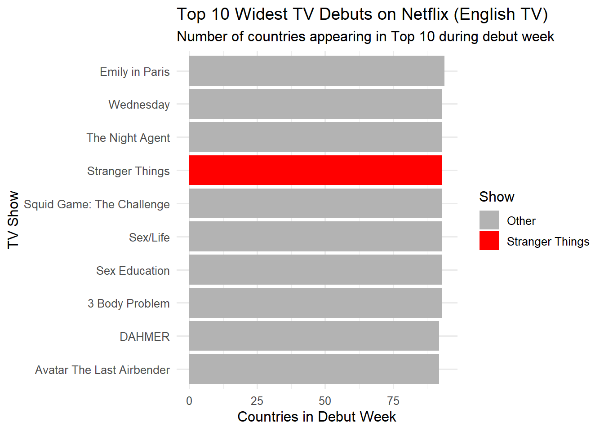

Formatting Column Names. Also setting up a clean table for Question #5 as well as for interactive tables used subsequently. Click the Code Icon Below to See Full Code
Code
library(stringr)format_titles <-function(df){colnames(df) <-str_replace_all(colnames(df), "_", " ") |>str_to_title() df}# THIS IS THE NEW CHUNK; Clean country table column names for Question 5 and interactive tablesCOUNTRY_TOP_10_CLEAN <- COUNTRY_TOP_10 %>%format_titles()colnames(COUNTRY_TOP_10_CLEAN)[1] <-"Country"colnames(COUNTRY_TOP_10_CLEAN)[colnames(COUNTRY_TOP_10_CLEAN) =="Show Title"] <-"Show_Title"colnames(COUNTRY_TOP_10_CLEAN)[colnames(COUNTRY_TOP_10_CLEAN) =="Cumulative Weeks In Top 10"] <-"Cumulative_weeks_In_Top_10"#NEW CHUNK ENDS HEREGLOBAL_TOP_10 |>format_titles() |>head(n=20) |>datatable(options=list(searching=FALSE, info=FALSE)) |>formatRound(c('Weekly Hours Viewed', 'Weekly Views'))
Dropping season_title to get closer to publication quality titles
Now Beginning Exploratory Data Analysis Section. The code fold below shows all code for Questions 1-10 given on Prof. Weylandt’s website. Markdown is subsequently used for inline text and to “call” variables out of the code.
Code
library(dplyr)#Setting variable num_countries for Question 1num_countries <- COUNTRY_TOP_10 %>%distinct(country_name) %>%nrow()#Non english top film for Question 2non_english_top <- GLOBAL_TOP_10 %>%mutate(Language =str_extract(category, "\\((.*)\\)")) %>%mutate(Language =str_replace_all(Language, "[()]", "")) %>%filter(str_detect(category, "Film"), Language !="English") %>%group_by(show_title) %>%summarise(total_weeks =sum(cumulative_weeks_in_top_10, na.rm =TRUE)) %>%arrange(desc(total_weeks)) %>%slice(1)#Longest film and runtime for Question 3longest_film <- GLOBAL_TOP_10 %>%filter(str_detect(category, "Film")) %>%arrange(desc(runtime)) %>%slice(1)library(scales)#Program (per category) with most total hours of global viewership for Question 4top_hours <-GLOBAL_TOP_10 %>%group_by(category, show_title) %>%summarise(total_hours =sum(weekly_hours_viewed, na.rm =TRUE), .groups ="drop") %>%group_by(category) %>%slice_max(total_hours, n=1) %>%ungroup() %>%format_titles() %>%#this converts column names to title casemutate(`Total Hours`=comma(`Total Hours`))#Creating variable for longest run in top 10 for country for Question 5longest_country_run <- COUNTRY_TOP_10_CLEAN %>%filter(str_detect(Category, "TV")) %>%#match both English & Non-English TVgroup_by(Show_Title, Country) %>%summarise(run_weeks =sum(Cumulative_weeks_In_Top_10, na.rm =TRUE), .groups ="drop") %>%arrange(desc(run_weeks)) %>%slice(1)#Creating variable for Country with < 200 weeks of history for Question 6country_history <- COUNTRY_TOP_10_CLEAN %>%group_by(Country) %>%summarise(total_weeks =n_distinct(Week),last_week =max(as.Date(Week), na.rm =TRUE) ) %>%filter(total_weeks <200)#Creating variable for total viewership of Squid Game for Question 7squid_game_hours <- GLOBAL_TOP_10 %>%filter(str_detect(show_title, "Squid Game")) %>%summarise(total_hours =sum(weekly_hours_viewed, na.rm =TRUE))#Converting this variable to be read easilysquid_game_total <-formatC(squid_game_hours$total_hours, format ='f', big.mark =",", digits =0)#Creating variable for Red Notice Views for Question 8library(lubridate)red_notice_views <- GLOBAL_TOP_10 %>%filter(str_detect(show_title, "Red Notice"), year(week) ==2021) %>%mutate(approx_views = weekly_hours_viewed / (1+58/60)) %>%summarise(total_views =sum(approx_views, na.rm =TRUE))#Converting to readable mannerred_notice_total <-formatC(red_notice_views$total_views, format ="f", big.mark =",", digits =0)#Films that reached #1 in US after debuting lower for Question 9us_films <- COUNTRY_TOP_10_CLEAN %>%filter(Country =="United States", str_detect(Category, "Film"))# Getting debut rank for each film and whether it later hit #1film_climbers <- us_films %>%group_by(Show_Title) %>%summarise(debut_week =min(Week, na.rm =TRUE),debut_rank =`Weekly Rank`[which.min(Week)],ever_number1 =any(`Weekly Rank`==1, na.rm =TRUE),last_number1_week =if (any(`Weekly Rank`==1, na.rm =TRUE)) {max(Week[`Weekly Rank`==1], na.rm =TRUE) } else {as.Date(NA) },.groups ="drop" ) %>%filter(debut_rank !=1& ever_number1 ==TRUE)#For Question 10; TV show/season with widest debut across countriestv_debut <- COUNTRY_TOP_10_CLEAN |>filter(str_detect(Category, "TV")) |>group_by(Show_Title) |>summarise(debut_week =min(Week, na.rm =TRUE), .groups ="drop")tv_debut_counts <- COUNTRY_TOP_10_CLEAN |>inner_join(tv_debut, by =c("Show_Title", "Week"="debut_week")) |>group_by(Show_Title, Week) |>summarise(num_countries =n_distinct(Country), .groups ="drop") |>arrange(desc(num_countries)) |>slice(1)
1. How many countries does Netflix operate in?
Netflix operates in 94 countries.
2. Which non-English-language film has spent the most cumulative weeks in the global top 10?
The non-English-language film with the most cumulative weeks in global Top 10 is All Quiet on the Western Front with 276 weeks.
3. What is the longest film (English or non-English) to have ever appeared in the Netflix global Top 10? How long is it in minutes?
The longest film in the Global Top 10 is Pushpa 2: The Rule (Reloaded Version) with a runtime of 224 minutes.
4. For each of the four categories, what program has the most total hours of global viewership?
Programs with the most total hours per category:
5. Which TV show had the longest run in a country’s Top 10? How long was this run and in what country did it occur?
The TV show with the longest run in a country is Money Heist in Pakistan with 9629 weeks.
6. Netflix provides over 200 weeks of service history for all but one country in our data set. Which country is this and when did Netflix cease operations in that country?
The country with fewer than 200 weeks of history is Russia, with last recorded week on 2022-02-27.
7. What is the total viewership of the TV show Squid Game? Note that there are three seasons total and we are looking for the total number of hours watched across all seasons.
Total viewership of Squid Game across all seasons is 5,310,000,000 hours.
8. Approximate number of views of Red Notice in 2021 is
201,732,203 views
9. How many Films reached Number 1 in the US but did not originally debut there? That is, find films that first appeared on the Top 10 chart at, e.g., Number 4 but then became more popular and eventually hit Number 1? What is the most recent film to pull this off?
A total of 44 films reached #1 in the US after debuting at a lower rank. The most recent film to do this was KPop Demon Hunters, which hit #1 in the week of 2025-08-31.
10. Which TV show/season hit the top 10 in the most countries in its debut week? In how many countries did it chart?
The TV show/season that hit the Top 10 in the most countries during its debut week is Emily in Paris, which charted in 94 countries.
Press Release 1 : Stranger Things Season 5
Season 5 of Stranger Things Obliterates Records as Global Audiences Return back to Hawkins
Netflix is pleased to announce the return of Stranger Things with its’ much anticipated Season 5, establishing the show as one of the platform’s most notable franchises. In the week that it debuted, the show charted in over 90 countries, claiming the #1 spot in overall categories as well as English TV. Through its run to the top, Stranger Things has amassed to over billions of hours viewed, with its latest season garnering over 300 million hours in the first month following release. The show holds many different records including the widest TV debut across countries, a notable feat showcasing its global cultural impact. As the town of Hawkins enters its last chapter, fans across the globe continue to demonstrate that Stranger Things is more than just a show - it’s a phenomenon.
Code
library(dplyr)library(ggplot2)library(stringr)# Step 1: Filter TV shows from COUNTRY_TOP_10_CLEANtv_country <- COUNTRY_TOP_10_CLEAN %>%filter(Category =="TV", !is.na(Week)) # only valid weeks# Step 2: Get category/language from GLOBAL_TOP_10 safelyglobal_tv_cat <- GLOBAL_TOP_10 %>%filter(str_detect(category, "TV")) %>%# TV onlyselect(show_title, category) %>%distinct(show_title, category) # avoid many-to-many join# Step 3: Join language infotv_country <- tv_country %>%left_join(global_tv_cat,by =c("Show_Title"="show_title"),relationship ="many-to-many")# Step 4: Keep only English TVtv_country_eng <- tv_country %>%filter(category =="TV (English)")# Step 5: Compute debut week per showtv_debut_english <- tv_country_eng %>%group_by(Show_Title) %>%summarise(debut_week =min(Week, na.rm =TRUE), .groups ="drop")# Step 6: Count number of countries per show at debuttv_debut_counts_eng <- tv_country_eng %>%inner_join(tv_debut_english, by =c("Show_Title", "Week"="debut_week")) %>%group_by(Show_Title, Week) %>%summarise(num_countries =n_distinct(Country), .groups ="drop") %>%arrange(desc(num_countries)) %>%slice_head(n =10) # top 10# Step 7: Highlight Stranger Thingstv_debut_counts_eng$highlight <-ifelse(tv_debut_counts_eng$Show_Title =="Stranger Things","Stranger Things", "Other")# Step 8: Plotggplot(tv_debut_counts_eng, aes(x =reorder(Show_Title, num_countries),y = num_countries, fill = highlight)) +geom_col() +coord_flip() +scale_fill_manual(values =c("Stranger Things"="red", "Other"="grey70")) +labs(title ="Top 10 Widest TV Debuts on Netflix (English TV)",subtitle ="Number of countries appearing in Top 10 during debut week",x ="TV Show",y ="Countries in Debut Week",fill ="Show" ) +theme_minimal(base_size =12)

Press Release 2: Netflix’s Commercial Success in India
Through the Introduction of Hindi-Language Programs, Netflix Experiences Rapid Growth in India
Netflix’s investment in region-specific content continues to pay off, with Hindi-language films and TV shows achieving remarkable popularity across India. These hits are helping the platform reach new audiences and solidify its presence in one of the world’s largest media markets.
Code
library(dplyr)library(ggplot2)library(stringr)library(ggtext) # for element_markdown()# Step 1: Filter Hindi/non-English programs in Indiaindia_non_english <- COUNTRY_TOP_10_CLEAN %>%filter(Country =="India", !is.na(Week)) %>%left_join( GLOBAL_TOP_10 %>%select(show_title, category) %>%distinct(),by =c("Show_Title"="show_title") ) %>%filter(str_detect(category, "Non-English")) %>%group_by(Show_Title) %>%summarise(total_weeks =sum(Cumulative_weeks_In_Top_10, na.rm =TRUE), .groups ="drop") %>%arrange(desc(total_weeks))# Step 2: Select top Hindi programshindi_programs <-c("RRR (Hindi)", "The Great Indian Kapil Show", "Sooryavanshi", "Haseen Dillruba", "Khakee: The Bihar Chapter")top_hindi <- india_non_english %>%filter(Show_Title %in% hindi_programs)# Step 3: Highlight the top programtop_hindi$highlight <-ifelse(top_hindi$total_weeks ==max(top_hindi$total_weeks),"Top Program", "Other")top_hindi$highlight <-factor(top_hindi$highlight, levels =c("Top Program", "Other"))# Step 4: Plot top Hindi programs in India with bold y-axis labels and colored top programtop_program <- top_hindi$Show_Title[top_hindi$highlight=="Top Program"]ggplot(top_hindi, aes(x =reorder(Show_Title, total_weeks),y = total_weeks, fill = highlight)) +geom_col() +coord_flip() +scale_fill_manual(values =c("Top Program"="red", "Other"="grey70")) +labs(title ="Top Hindi-Language Programs on Netflix India",subtitle ="Cumulative Weeks in Top 10",x ="Program",y ="Cumulative Weeks in Top 10",fill ="Highlight" ) +theme_minimal(base_size =12) +theme(axis.text.y =element_markdown() ) +scale_x_discrete(labels =function(x) {ifelse(x == top_program,paste0("<span style='color:red;'><b>", x, "</b></span>"),paste0("<b>", x, "</b>")) })
The top Hindi-language program, RRR (Hindi), spent 325 cumulative weeks in the Top 10 in India alone. Combined, the top 5 Hindi programs have accumulated over 1,508 cumulative weeks in the Top 10. Assuming an average viewer watches one program per week, this implies an estimated Netflix audience of approximately 377 viewers in India. Importantly, several of these programs did not chart in the US, demonstrating Netflix’s ability to produce region-specific hits. Long-term growth trends suggest India’s audience for Hindi-language content will continue expanding, providing Netflix with significant opportunities for subscriber acquisition, retention, and cultural impact.
Conclusion: Netflix’s Hindi-language catalog is proving to be a powerful driver of engagement in India, positioning the platform for continued growth in one of the world’s largest and fastest-growing media markets.
Press Release 3: Global TV Dominance
Serialized TV Leads the Way: Netflix’s Global Audience Shows Strong Preference for TV Programming
Netflix continues to dominate worldwide entertainment, with audiences showing a marked preference for serialized TV content. Across multiple countries, TV shows consistently top the platform’s weekly rankings, reflecting global engagement trends and opportunities for content investment.
Code
library(dplyr)library(ggplot2)library(stringr)library(scales)# Step 1: Prepare combined global dataglobal_content <- COUNTRY_TOP_10_CLEAN %>%filter(!is.na(Week)) %>%# remove missing weeksleft_join( GLOBAL_TOP_10 %>%select(show_title, category) %>%distinct(),by =c("Show_Title"="show_title"),relationship ="many-to-many" )# Step 2: Compute cumulative weeks in Top 10 by broad genregenre_trends <- global_content %>%group_by(category) %>%summarise(total_weeks =sum(Cumulative_weeks_In_Top_10, na.rm =TRUE),n_countries =n_distinct(Country),.groups ="drop" ) %>%arrange(desc(total_weeks))# Step 3: Highlight top genregenre_trends$highlight <-ifelse(genre_trends$total_weeks ==max(genre_trends$total_weeks),"Top Genre", "Other")genre_trends$highlight <-factor(genre_trends$highlight, levels =c("Top Genre", "Other"))# Step 4: Plot top genres globallyggplot(genre_trends, aes(x =reorder(category, total_weeks),y = total_weeks,fill = highlight)) +geom_col() +coord_flip() +scale_fill_manual(values =c("Top Genre"="red", "Other"="grey70")) +scale_y_continuous(labels = comma) +# human-readable y-axislabs(title ="Top Content Types Globally on Netflix",subtitle ="Cumulative Weeks in Top 10 by Category",x ="Category",y ="Cumulative Weeks in Top 10",fill ="Highlight" ) +theme_minimal(base_size =12)
Netflix’s global audience shows a strong preference for the top content type:
TV (Non-English) spent 438,394 cumulative weeks in the Top 10 across 94 countries.
This demonstrates Netflix’s ability to create globally appealing content. While Films and Non-English shows remain strong in regional markets, serialized TV content consistently dominates global engagement, indicating that investing in English-language serialized TV remains a key driver of worldwide viewership.
Long-term growth trends suggest that continuing to focus on serialized TV with international appeal will maximize Netflix’s audience retention, engagement, and expansion opportunities across diverse markets.